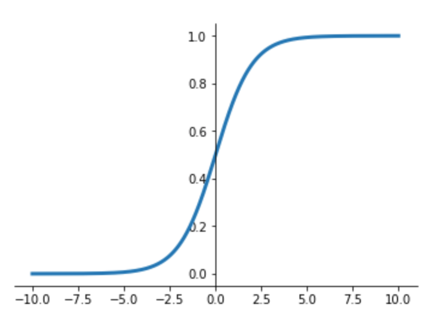

Recurrent Neural Networks
Oliver Zeigermann / @DJCordhose
https://djcordhose.github.io/ai/2018_nlp_rnn.htmlStructure
- Machine Learning architectures applicable to text
- RNNs
- LSTMs
- GRUs
- Applications
Text is special

Simple RNNs
Recurrent Neural Networks
Motivation
Traditional Networks have no memory of previous events
Repetition Activation Functions

Sigmoid, floating from 0 to 1

Tangens Hyperbolicus, floating from -1 to 1